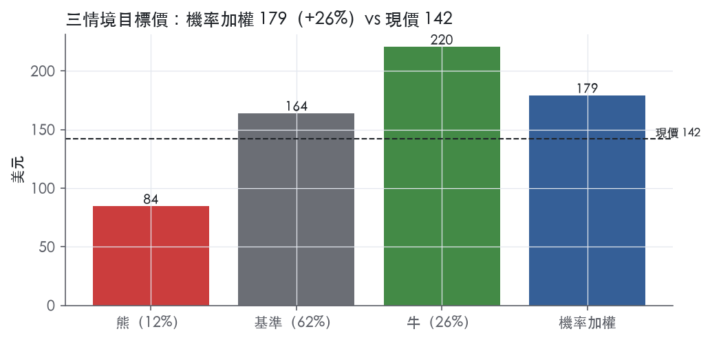
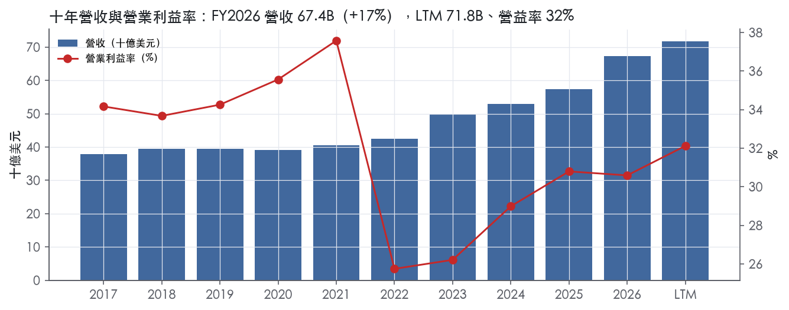
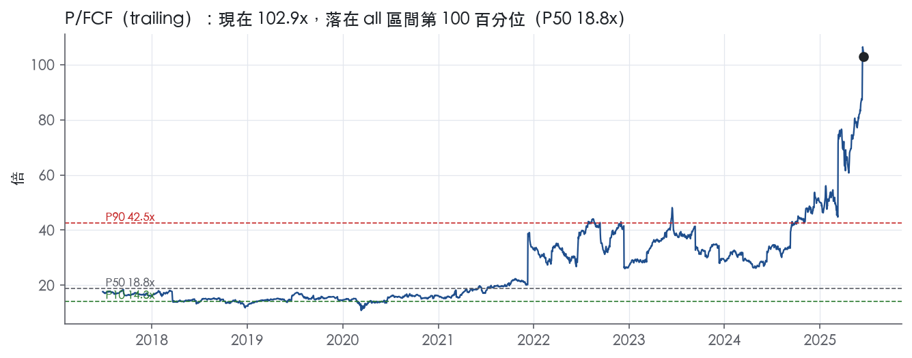
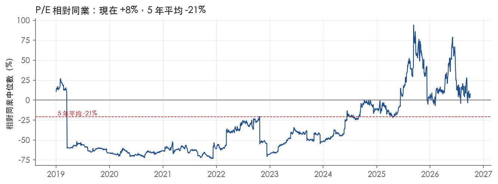
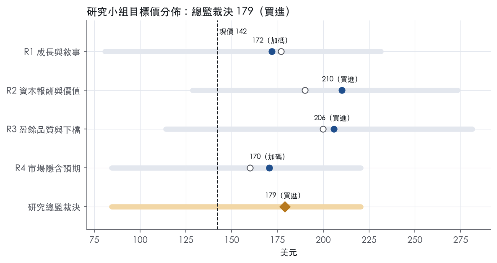
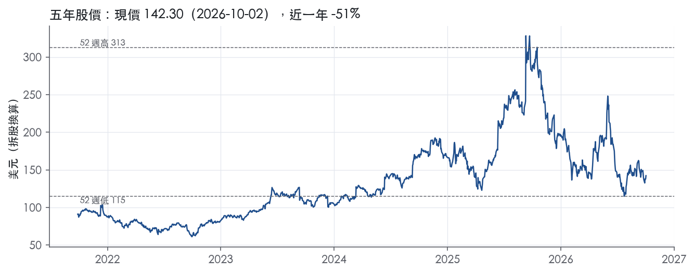

評等總表 › 資訊科技 › ORCL
盈餘上修、倍數不擴張，看多｜評等 買進｜目標價 179
| 報告日 | 評等 | 目標價 | 當時股價 | 超額報酬 |
|---|---|---|---|---|
| 2026-10-02 | 買進 | 179 | 142 | +17.0% |
| 評等 | 買進（邊界，鄰近加碼） |
| 12 個月目標價 | 179 美元 |
| 現價 | 142.30 美元（2026-10-02） |
| 預期報酬 | 股價 +25.8%＋股息 1.4%＝總報酬 +27.2%；同業籃門檻 10.2%，超額 +17.0% |
| 估值方法 | P/E 23.0x，套在未來四季的EPS |
| 三情境 | 熊 84／基準 164／牛 220 |
| 研究流程 | 四位研究員兩輪辯論＋研究總監裁決 |
| 資料來源 | SEC EDGAR XBRL、Tiingo、FRED（全免費） |
盈餘上修、倍數不擴張，看多（研究總監裁決，四位研究員兩輪辯論後）
評等 買進（邊界，鄰近加碼）｜12 個月目標價 179 美元（總監三情境機率加權 169 與研究員中位數 189 各半）｜現價 142.30（2026-10-02）
預期報酬：股價 +25.8%＋股息 1.4%＝總報酬 +27.2%。同業籃門檻 10.2%，超額 +17.0%，離加碼的分界不到三個百分點，屬邊界評等（落在其他級距的機率約三成）。
估值方法：P/E 23.0x，套在未來四季的EPS。三情境：熊 84（12%）／基準 164（62%）／牛 220（26%）。
什麼會讓研究總監改變看法：FY2027Q2 營收年增低於 30% 或 RPO 自 664B 季減，基準改為熊情境；2027 上半年融資宣布第二個 ATM 或新債利差明顯走寬，轉中性。公司揭露前幾大客戶佔 RPO 比例與認列期程且分部毛利率連兩季回升，y2 上修、倍數向 24.0x 以上靠。
| 過去四季（實際，FY2027Q1） | 未來四季 | 第 5–8 季 | 第 9–12 季 | |
|---|---|---|---|---|
| 營收（B） | 71.8B | 96.2B | 117.3B | 134.9B |
| 營收成長 | 21.6% | 34.0% | 22.0% | 15.0% |
| 營業利益率 | 32.1% | 33.0% | 31.0% | 29.0% |
| EPS（美元） | 6.41 | 7.13 | 7.97 | 8.26 |
| EPS 成長 | 48.1% | 11.3% | 11.8% | 3.6% |
| 每股股息（美元） | 2.00 | 2.00 | 2.00 | 2.00 |
| P/E（現價） | 22.2x | 20.0x | 17.8x | 17.2x |
| 股息殖利率（現價） | 1.4% | 1.4% | 1.4% | 1.4% |
過去四季為申報數字；預測為研究總監的假設、程式計算。倍數與殖利率都用現價計算，用來看現價對應各期獲利的高低。
| 情境 | 機率（歷史） | 故事 | 未來四季營收成長 | 第 5–8 季營益率 | 倍數 | 目標價 | 股價漲跌 |
|---|---|---|---|---|---|---|---|
| 熊 | 12%（6%） | 風險表第 2 條（大客戶延後承接已交付容量、閒置折舊壓利潤）與第 3 條（2027 上半年籌資改走股權、股數年增 8%）：Q2 營收年增低於 30%、RPO 自 664B 季減，倍數壓到低成長軟體股水位 | 22.0% | 26.0% | 16.0x | 84 | -40.6% |
| 基準 | 62%（69%） | 達成 FY2027 至少 90B 指引，營益率隨 IaaS 佔比與折舊逐年下滑，倍數不擴張，稀釋 5% 吃掉一部分 | 34.0% | 31.0% | 23.0x | 164 | 15.2% |
| 牛 | 26%（25%） | Q2 營收達指引上緣、IaaS 維持三位數成長、分部毛利率止跌、剩餘籌資走債券，P/E 向自家 10 年 P50 29.0x 靠但仍留折價 | 40.0% | 34.0% | 27.0x | 220 | 54.9% |
目標價由程式依研究總監的驅動與倍數計算；機率由研究總監給定。括號內是歷史頻率：把這檔股票過去十年 12 個月報酬的波動形狀，置中在基準情境，結果落在各情境附近的比例。

四位研究員用不同方法各自估值，回應研究總監的質疑後交出第二輪，最後由總監逐點裁決。各研究員的主張見第七章，裁決理由見第八章，完整論證見《研究底稿》。
| 立場（一輪→二輪） | 加權目標價（一輪→二輪） | 評等（一輪→二輪） | 第二輪倍數 | 熊～牛目標價 | |
|---|---|---|---|---|---|
| R1 成長與敘事 | 看多→看多 | 177→172 | 買進→加碼 | 23.0x | 81～231 |
| R2 資本報酬與價值 | 中性→看多 | 190→210 | 買進→買進 | 19.7x | 129～273 |
| R3 盈餘品質與下檔 | 中性→看多 | 200→206 | 買進→買進 | 19.0x | 114～281 |
| R4 市場隱含預期 | 中性→看多 | 160→170 | 中立→加碼 | 23.0x | 84～220 |
| 研究總監裁決 | 看多 | 179 | 買進 | 23.0x | 84～220 |
目標價由程式依各自的驅動與倍數計算；評等＝機率加權總報酬 − 同業籃門檻。
Oracle 是一家以資料庫與企業應用起家、現在押注雲端基礎設施（OCI）與 AI 算力租賃的企業軟體與雲端公司。公司將業務拆成三個經營分部：雲端與軟體、硬體、服務，CODM 以此三分部分配資源與審視績效¹。客戶主要是全球企業與政府機構，透過訂閱制取得 Oracle Cloud 應用與基礎設施技術，或以永久授權取得軟體並搭配支援服務¹。近期成長的主軸已經從傳統軟體授權轉向雲端基礎設施，尤其是 AI 訓練與推論所需的算力租賃。
雲端與軟體是絕對核心，FY2026 佔總營收 87%，FY2025 為 86%（10-K FY2025 Item 1 揭露比例）¹。此分部營收來源分為雲端收入（Oracle Cloud Applications 與 Oracle Cloud Infrastructure，依訂閱期間或用量認列）與軟體收入（授權於交付時點認列、支援服務於合約期間按比例認列）¹。FY2026 雲端與軟體營收 58,530M 美元，年增 19%（實際）、17%（固定匯率），其中雲端應用與雲端基礎設施分別貢獻固定匯率成長的 16% 與 84%，顯示成長幾乎全部來自基礎設施¹。細項上，雲端基礎設施營收 18,101M 美元，年增 77%；雲端應用 15,888M 美元，年增 11%；軟體授權 4,737M 美元，年減 9%；軟體支援 19,804M 美元，年增 1%¹。此分部總利潤率 FY2026 為 59%，較 FY2025 的 63% 下滑，主因基礎設施費用因資料中心擴建大增 56%（實際）¹。
硬體業務規模小、FY2026 與 FY2025 均佔總營收 5%，營收 3,084M 美元，年增 5%，成長來自 Oracle Exadata 等策略性硬體產品，總利潤率維持 65%¹。服務業務佔比持續下滑，FY2026 為 8%、FY2025 為 9%，營收 5,743M 美元、年增 10%，成長來自顧問服務，但此業務毛利率結構性低於另兩個分部，FY2026 總利潤率 27%（FY2025 為 19%）¹。三分部排序清楚：雲端與軟體是規模與成長引擎、硬體是穩定小分部、服務是低毛利配套業務。
進入 FY2027 後分部揭露口徑改變為 Cloud／Software／Hardware／Services 四線呈現，FY2027Q1 雲端營收 11,607M 美元（佔總營收 60%），年增 62%（USD）、61%（固定匯率），其中雲端基礎設施（IaaS）年增 121%、雲端應用（SaaS）年增 10%；軟體營收 5,550M 美元，年減 3%²。這代表 IaaS 已經成為公司事實上的主引擎，軟體授權的萎縮不再是負擔而是雲端遷移的證據。
美洲是最大市場且佔比持續擴大，FY2026 總營收中美洲佔 66%、EMEA 23%、亞太 11%，相較 FY2025 的 63%／25%／12%，美洲集中度在上升¹。FY2026 總營收成長中，美洲、EMEA、亞太分別貢獻固定匯率成長的 88%、5%、7%，顯示成長幾乎由美洲 AI 雲端需求驅動¹。通路上，公司在雲端與軟體業務強調直接銷售團隊，並搭配部分間接通路；硬體產品主要透過獨立經銷商與加值轉售商的間接通路銷售，輔以直接銷售¹。客戶集中度、前幾大客戶佔比等資訊 10-K 未揭露。
FY2026Q3（截至 2026-02-28）總營收 17.19B 美元，年增 21.7%（dv 衍生），營益率 31.8%。FY2026Q4（截至 2026-05-31）總營收 19,184M 美元，年增 21%（USD）、20%（固定匯率），雲端營收 9,913M 美元年增 47%，其中雲端基礎設施年增 93%、雲端應用年增 10%；軟體營收年減 2%至 6,824M 美元；GAAP 稀釋每股盈餘 1.45 美元，年增 21%³。同時公司公告整年 FY2026 總營收 67.4B 美元、年增 17%，雲端營收 34.0B 美元、年增 39%，RPO 季底來到 638B 美元，單季增加 85B 美元、年增 363%³。進入 FY2027Q1（截至 2026-08-31），總營收 19,345M 美元，年增 30%（USD 及固定匯率），雲端營收 11,607M 美元、年增 62%，雲端基礎設施年增 121%，軟體營收年減 3%至 5,550M 美元；GAAP 稀釋每股盈餘 1.56 美元，年增 55%（USD）；RPO 進一步擴大至 664B 美元，年增 209B 美元²。公司對 FY2027Q2 的指引為：總營收預期以固定匯率及美元計成長 30% 至 34%，總雲端營收預期成長 64% 至 70%（固定匯率）或 65% 至 71%（美元），Non-GAAP 每股盈餘預期在 1.85 至 1.93 美元之間²。對全年 FY2027 的指引為總營收至少 90B 美元、Non-GAAP EPS 8.10 美元²。LTM（LTM@FY2027Q1）營收 71.78B 美元、EBITDA 33.94B 美元、FCF 為 -28.72B 美元，顯示公司正處於資本支出遠高於營運現金流的建廠期。
公司將「選擇性併購計畫」列為企業策略的一部分，過去已投入數十億美元收購互補性公司、產品、服務與技術，未來會持續以盈餘、營益率、現金流與投資資本回報率等指標評估潛在併購標的¹。公司明確表示在固定匯率基礎上，預期雲端與軟體總營收將持續成長，原因是雲端產品的預期成長與對軟體產品的持續需求¹。公司強調正在擴充既有資料中心容量並在新地區建立資料中心，以滿足當前與預期的客戶需求，且預期此一雲端與軟體費用增長的趨勢將延續至 FY2027 及未來幾個財年¹。新聞稿層面，公司將近期爆發式成長歸因於「AI 雲端訓練與推論服務的客戶需求持續以快於供給的速度成長」，單季新增逾 30B 美元 AI 雲端合約，且自 Q4 以來交付超過 300,000 個 GPU，較 Q4 FY26 近乎三倍²。公司也點名 Oracle Multicloud AI Database 於 Q4 成長 404%，是史上成長最快的業務，並預期新版 AI 版 Cerner 醫療系統將把 Oracle Health 整體業務推升至兩位數成長³。資本配置上，FY2026 已透過發行 43.0B 美元公司債與 5.0B 美元特別股籌資，FY2027 預計再籌資約 40B 美元（含已公告的 20B 美元 ATM 股權發行計畫），且公司表示 2026 年內不預期再發新債³。整體看，Oracle 的敘事已從「資料庫老牌軟體廠」轉成「被 AI 雲端需求推著做資本支出的基礎設施廠商」，RPO 快速累積（664B 美元）是股價敘事的核心支撐，但同時 FCF 連續為負（FY2026 為 -23,686M 美元）代表這個故事能否兌現，高度依賴能否持續用債務與股權市場為資本支出輸血。投資人需要關注的不是營收成長夠不夠快，而是雲端基礎設施的毛利率能否在資料中心規模擴大後回升，否則「成長即虧現金」的模式會持續推升槳負債與稀釋壓力。

Oracle 的護城河評為「窄」，趨勢「變窄」。護城河建立在傳統資料庫與企業應用的軟體支援客戶基礎上，這部分的轉換成本足以支撐中期的超額報酬。問題在於公司正把資本重心移往雲端基礎設施，原文裡找不到這塊業務有結構性優勢的證據，而它正在稀釋合併層級的資本報酬。我們沒有把握合併 ROIC 能長期站穩資本成本之上，所以不給「寬」。支援基礎的續約性極高，所以也不降到「無」。
有原文證據的優勢來源只有一項：轉換成本。無形資產、網路效應、成本優勢、效率規模四類，在原文中都找不到可以點名的證據，因此不列。
營益率的穩定度支持護城河存在，但 ROIC 無法驗證，現金報酬正在惡化，數字只撐得起「窄」。
最大的侵蝕來源不是競爭者搶走資料庫客戶，而是公司把資本大舉投入一個看不到護城河證據的業務。
目標倍數應該相對高品質軟體同業折價，不應假設回到自身五年中位數。目前 P/E 22.2x，位於五年分位 6.0%，五年 P50 為 32.5x。低分位反映的是護城河從軟體年金轉向資本密集雲端的結構變化，不是錯殺；在 IaaS 利潤率止跌、FCF 轉正之前，不支持溢價。
| 指標 | 最新 | 十年平均 | 標準差 | 最低 | 最高 |
|---|---|---|---|---|---|
| 營業利益率 | 30.6% | 31.8% | 3.8% | 25.7% | 37.6% |
| FCF 利潤率 | -35.2% | 17.8% | 20.8% | -35.2% | 34.7% |
| ROE | 54.3% | -120.7% | 463.7% | -1368.0% | 214.1% |
程式計算。資本成本代理值（10 年債＋5%）：10.2%；ROIC 平均減資本成本：—；ROIC 有資料的 1 年中，高於資本成本 1 年。
營業現金流對淨利比 LTM 達 2.48x、近三年平均 1.78x、十年平均 1.83x，三個窗口都是綠燈，顯示應計項目不是問題。但自由現金流對淨利比 LTM 為 -1.52x、近三年平均 -0.10x、十年平均 0.98x，LTM 與近三年均為紅燈。差距的根源是資本支出，FY2026 資本支出/營收達 82.6%、FY2025 為 37.0%，相較 FY2017–FY2021 僅 4–5%（資料包年度表），是結構性跳升而非一次性。應計比率 LTM -9.9%、近三年 -6.1%、十年 -4.8%，皆為負值綠燈，代表淨利其實低於現金流、沒有靠應計灌水。應收帳款成長減營收成長 FY2026 為 +4.0pp，綠燈，營運資金沒有在吃盈餘。整體看，GAAP 盈餘的「現金品質」本身是乾淨的，真正的風險是資本支出把經營現金流全部、甚至更多吃掉，FCF 已經連續兩年為負（FY2025 -0.39B、FY2026 -23.69B），LTM 更惡化到 -28.72B。
Q1 FY2027 新聞稿顯示 GAAP 稀釋 EPS 1.56、non-GAAP EPS 1.92，GAAP 營業利益 6,728M、non-GAAP 營業利益 8,200M²。GAAP 與 non-GAAP 營業利益差距主要來自無形資產攤銷 202M（去年同期 420M）與重組及其他費用 94M（去年同期 415M）²。這兩項合計 296M 僅占當季 19,345M 營收的小部分，但年增率分別下滑 52%、77%，顯示去年同期的重組與併購攤銷規模較大、屬於非常態項目²。新聞稿並未在本段列出 SBC 加回金額，但計分表顯示 SBC/營收 LTM 6.7%、近三年 7.6%，均高於十年平均 5.6%，為黃燈，這是公司非 GAAP 數字慣常加回但本系統不加回的真實現金成本。guidance 另外註明 Q2 FY26 的一次性 Ampere 投資利得會墊高 Q2 FY27 non-GAAP EPS 年減幅度的比較基礎²，提醒讀者 non-GAAP 年增率本身已經在排除一次性項目，分析時不能把這類年增率當作常態成長率看。
槓桿與付息能力同步轉弱：淨負債/EBITDA LTM 2.60x、近三年平均 3.41x，十年平均 2.51x，為黃燈，三年平均已逼近紅燈門檻 3.00x。淨負債從 FY2017 的 36.12B 一路攀升到 FY2026 的 97.65B（資料包年度表），同時總債務在最近八季從 88.62B 升到 125.34B（資料包季表），伴隨大型資本支出循環。利息保障倍數 LTM 4.52x、近三年 4.60x、十年平均 5.48x，均為黃燈，低於綠燈門檻 8.00x，顯示付息能力隨槓桿上升而下滑，但尚未落入紅燈區（<3.00x）。股東回饋面，（股利+回購）/淨利 LTM 31.4%、近三年 43.6%，但十年平均高達 169.9%，為黃燈，顯示公司過去長期用舉債方式回饋股東，現階段已明顯縮手把現金留給資本支出。稀釋股數年變動 LTM +3.0%，轉為正值黃燈，十年平均為 -3.9%，意味公司近期不再淨減少股數，且 Q1 FY2027 新聞稿揭露完成 20B 美元 ATM 股票出售籌資²，稀釋壓力是明確的、非一次性，而是公司資本計畫的一部分。
估值應以 GAAP 盈餘為主軸、再對 FCF 缺口打折，因為現金轉換比率本身乾淨（CFO/淨利持續 >1.7x）、但資本支出循環已讓 FCF 轉負，EPS 不能直接套用傳統 FCF 轉換假設。淨負債/EBITDA 近三年平均已逼近 3.0x 紅燈門檻、利息保障倍數降到 4.5x 區間，意味槓桿正在限制可承受的估值倍數上緣，尤其若資本支出循環未如預期帶來雲端營收兌現，倍數應往歷史分位數低端修正而非上緣。SBC 黃燈與稀釋股數轉正，建議在算每股價值時用稀釋後股數並對 SBC 比例高於歷史的部分做适度扣除，而非完全採信 non-GAAP 加回後的 EPS。
| 項目 | LTM | 近三年 | 十年 | 燈號 | 規則 |
|---|---|---|---|---|---|
| 營業現金流／淨利 | 2.48x | 1.78x | 1.83x | 綠 | ≥1.00x 綠、<0.80x 紅 |
| 自由現金流／淨利 | -1.52x | -0.10x | 0.98x | 紅 | ≥0.90x 綠、<0.60x 紅 |
| 應計比率（(淨利−CFO)／平均總資產） | -9.9% | -6.1% | -4.8% | 綠 | ≤0.0% 綠、>5.0% 紅 |
| SBC／營收 | 6.7% | 7.6% | 5.6% | 黃 | ≤3.0% 綠、>8.0% 紅 |
| 淨負債／EBITDA | 2.60x | 3.41x | 2.51x | 黃 | ≤1.50x 綠、>3.00x 紅 |
| 利息保障倍數（營業利益／利息） | 4.52x | 4.60x | 5.48x | 黃 | ≥8.00x 綠、<3.00x 紅 |
| 稀釋股數年變動 | 3.0% | 1.8% | -3.9% | 黃 | ≤0.0% 綠、>3.0% 紅 |
| （股利＋回購）／淨利 | 31.4% | 43.6% | 169.9% | 黃 | ≥50.0% 綠、<0.0% 紅 |
| 應收帳款成長 − 營收成長（FY2026） | +4.0pp | — | — | 綠 | ≤5pp 綠、>15pp 紅 |
程式計算；燈號以 LTM（無則近三年平均）判定。
| 風險 | 觸發指標（看什麼數字、在哪裡看） | 對 EPS 的影響方向與粗略幅度 | 未來 12 個月發生機率（高／中／低） | 出處 |
|---|---|---|---|---|
| OCI 資本支出與現金流失衡，FCF 持續為負 | FCF（財報 is/cf）、RPO 季增額（8-K）、資本支出/營收比 | 負向，大：FY2026 FCF -23.69B、LTM FCF -28.72B，資本支出/營收已衝到 82.6% | 高 | ⁵【判金額：, 】 |
| 大客戶信用風險與資料中心產能錯配（over/under-build） | 應收帳款天數、客戶集中度揭露（10-K 未揭露具體比例）、長期資料中心租約承諾金額 | 負向，中～大：若客戶違約或產能閒置，折舊與租賃費用無法被營收覆蓋 | 中 | 10-K 年報 FY2026 Item 1A（風險因素） |
| 資本市場融資依賴（債券＋ATM 股權）可能稀釋或拉高利息費用 | 新發債規模與利率（8-K）、ATM 增發股數（稀釋股數趨勢）、淨負債/EBITDA | 負向，中：FY2026 已發債 43.0B＋特別股 5.0B，FY2027 再籌資約 40B（含 20B ATM 已完成）³² | 高 | ³² |
| 雲端基礎設施毛利率被硬體採購成本與電力成本壓縮 | 雲端與軟體分部毛利率（10-K 分部揭露）、基礎設施費用年增率 | 負向，中：FY2026 分部毛利率已從 63% 降至 59%（10-K FY2025 分部揭露）⁵ | 中 | 10-K 年報 FY2026 Item 1A（風險因素） |
| 競爭對手（Azure/AWS/Google Cloud）以多雲策略或價格戰侵蝕客戶 | 雲端基礎設施（IaaS）年增率趨勢（8-K 連續季度比較）、RPO 轉換成收入的速度 | 負向，中：若 IaaS 增速從 121% 明顯回落，營收成長引擎立即熄火² | 中 | 10-K 年報 FY2026 Item 1A（風險因素） |
資本支出與現金流失衡是當下最急迫的風險。公司自己在 10-K 寫明，若低估或高估資料中心容量需求，可能被鎖在多年期的過剩資料中心空間與相關資本支出承諾中，卻拿不到對應營收⁵。量化底稿顯示 FY2026 資本支出/營收比已達 82.6%，FCF 為 -23.69B，LTM FCF 更惡化到 -28.72B。這不是短期波動，是連續多個財年的現金流出模式，監測指標就是每季 FCF 與資本支出/營收比，若這兩個數字沒有隨營收成長而收斂，代表「成長即燒錢」的敘事沒有兌現點。
客戶信用與產能錯配是結構性但較慢爆發的風險。10-K 明確承認在部分 OCI 業務中「集中於少數大型客戶」，且客戶可能槓桿過高或自身面臨營運與監管風險，即使信用審查機制運作正常，仍可能遭遇客戶不付款或不履約⁵。業務概況章也指出，10-K 並未揭露具體客戶集中度百分比，這本身就是一個監測缺口——投資人只能看應收帳款天數與壞帳準備的變化來間接偵測。
融資依賴是把前兩項風險連結到股價倍數的傳導機制。公司在 FY2026 已經透過 43.0B 美元公司債與 5.0B 美元特別股籌資，並表示 FY2027 還要再籌資約 40B 美元（其中 20B ATM 股權已於 Q1 完成發行）³²。這代表資本支出的資金來源一部分是稀釋性股權、一部分是增加槳負債（淨負債已從 FY2025 的 81.36B 升到 FY2026 的 97.65B）。10-K 也把「我們可能需要額外負債來為併購或擴張付費」列為風險⁵。監測指標是每次 8-K／10-Q 揭露的新增發債規模、利率，以及稀釋後股數的季度變化。
毛利率壓縮是最容易被忽略但已經在發生的風險。業務概況章引用 10-K 分部數字：雲端與軟體分部總利潤率從 FY2025 的 63% 降到 FY2026 的 59%，主因是基礎設施費用因資料中心擴建年增 56%⁵。公司自己也寫到，供應鏈短缺導致硬體採購成本上升，有時無法轉嫁給客戶，同時為了鎖定 GPU 與記憶體產能被迫接受「較不利的供應商條款」，增加了過剩與淘汰風險⁵。電力成本波動、極端天氣、區域市場結構也會在客戶定價固定或承諾的情況下直接吃掉毛利⁵。這條風險的監測指標是每季分部毛利率，一旦連續兩季未隨規模擴大回升，就代表規模經濟沒有出現。
競爭格局是會影響「成長能不能持續」的風險，但衝擊時間較晚。10-K 特別點名多雲策略本身是雙面刃：OCI 的多雲服務雖然讓客戶能混用 Azure、AWS、Google Cloud，但也可能讓客戶遷移出 Oracle 雲端或限制對 Oracle 其他產品的採購⁵。最新一期財報雲端基礎設施年增 121%，是整個多頭敘事的支柱²，監測指標就是後續每季這個增速是否持續在三位數，一旦掉到兩位數甚至更低，市場會立刻重新評估目前的 EV/Sales 倍數（現為 7.2x，5 年分位 36.7%，尚未貴到極端，但建立在高成長假設上）。
現價 142.30 對應 trailing（過去四季）P/E 22.2x、EV/EBITDA 15.3x、EV/EBITA 21.2x、EV/Sales 7.2x、FCF 殖利率 -6.7%。主要估值倍數 P/FCF 現在 102.9x，落在all區間第 100 百分位（P10／P50／P90 = 14.3x／18.8x／42.5x）。

把程式的機械基準預測放到現價下，市場付的前瞻倍數是：P/E（未來四季） 24.0x、P/E（第 5–8 季） 21.8x。反推 DCF 顯示市價隱含未來五年營收年成長 150.0%（WACC 9.0%、終值成長 3.0%、FCF 利潤率 -62.9%，SBC 不加回）。
| 倍數 | 現在 | all P10 | all P50 | all P90 | 現在分位 | 全期 P50 |
|---|---|---|---|---|---|---|
| P/E | 22.2x | 18.1x | 29.0x | 54.3x | 36.8% | 29.0x |
| EV/EBITDA | 15.2x | 12.4x | 17.2x | 24.9x | 35.2% | 17.2x |
| EV/EBITA | 21.0x | 13.4x | 19.7x | 29.8x | 55.0% | 19.7x |
| EV/EBIT | 22.3x | 15.0x | 22.4x | 34.2x | 49.8% | 22.4x |
| EV/Sales | 7.2x | 3.0x | 4.4x | 10.4x | 65.9% | 4.4x |
| P/S | 5.9x | 2.7x | 3.8x | 8.9x | 67.4% | 3.8x |
| P/FCF | 102.9x | 14.3x | 18.8x | 42.5x | 99.9% | 18.8x |
trailing 倍數（股價 ÷ 過去四季）；分位以每個交易日計算。
同業籃：MSFT, CRM, IBM, NOW, ADBE, INTU（手動名單（playbooks/peers.yaml））。評等門檻 10.2%：同業「倍數不變下持有一年」的隱含報酬中位數（＝ FCF 殖利率 ×(1＋g)＋g，g 為 5 年營收年複合成長並夾在 −2%～8%），每家夾在 0～15%、P/E 低於 5 倍視為資料可疑而排除，中位數再限制在 10 年債到 10 年債＋5% 之間（同業原始中位數 13.3%）。
| 代號 | 市值 | 5 年營收 CAGR | 營益率 | ROIC | P/E | 5 年 P/E 中位數 | EV/EBITDA | P/FCF | 隱含報酬 |
|---|---|---|---|---|---|---|---|---|---|
| ORCL | 430.3B | 10.7% | 32.1% | — | 22.2x | 32.5x | 15.3x | — | 12.9% |
| MSFT | 3,843.7B | 14.6% | 46.8% | 35.9% | 28.8x | 33.8x | 19.6x | 57.4x | 9.9% |
| CRM | 192.7B | 14.3% | 19.9% | 10.9% | 21.5x | 71.8x | 21.6x | 12.7x | 16.5% |
| IBM | 209.8B | 4.1% | 14.7% | 12.6% | 19.7x | 25.3x | 17.6x | 15.2x | 11.0% |
| NOW | 138.9B | 24.1% | 11.4% | — | 83.8x | 137.1x | 51.5x | 30.3x | 11.6% |
| ADBE | 92.9B | 13.1% | 35.7% | 111.5% | 13.3x | 37.5x | 8.9x | 8.8x | 20.3% |
| INTU | 75.4B | 17.4% | 27.4% | 20.0% | 17.1x | 58.8x | 12.0x | 8.7x | 20.4% |
| 同業中位數 | 14.5% | 23.7% | 20.0% | 20.6x | 48.1x | 18.6x | 14.0x | 10.2% |
全部 trailing，程式以各公司 SEC XBRL 與 Tiingo 行情計算；第一列為本檔。
P/E 相對同業中位數：現在 7.9%，過去 1 年平均 24.9%、3 年 -2.4%、5 年 -20.8%；EV/EBITDA 相對同業中位數：現在 -18.9%，過去 1 年平均 13.0%、3 年 -14.6%、5 年 -29.5%。

事後實現前瞻倍數帶（P/FCF，2017-06-27..2024-04-15）：P10／P50／P90 = 14.5x／19.2x／45.8x。它是每個交易日的股價除以之後四季實際實現的指標；一年後，今天的第 5–8 季正是那時的未來四季，所以這條帶是 12 個月目標價的同口徑倍數。因為用的是事後實際而非當時預期，過去成長超乎預期的公司這條帶會偏低。
程式的機械基準（成長率從過去四季年增率三年收斂到 6%、利潤率持平）用 事後實現前瞻 P/FCF P50 估值得到 -338（-337.6%），用現行倍數得到 -1694。這兩個數字只是參考點，不是本報告的目標價；研究員對這個定價的回應在第七章。
下表是每位研究員第一輪（各自獨立）與第二輪（回應研究總監的質疑後）的結果。目標價全由程式依各自的假設計算。
| 立場（一輪→二輪） | 加權目標價（一輪→二輪） | 評等（一輪→二輪） | 第二輪倍數 | 熊～牛目標價 | |
|---|---|---|---|---|---|
| R1 成長與敘事 | 看多→看多 | 177→172 | 買進→加碼 | 23.0x | 81～231 |
| R2 資本報酬與價值 | 中性→看多 | 190→210 | 買進→買進 | 19.7x | 129～273 |
| R3 盈餘品質與下檔 | 中性→看多 | 200→206 | 買進→買進 | 19.0x | 114～281 |
| R4 市場隱含預期 | 中性→看多 | 160→170 | 中立→加碼 | 23.0x | 84～220 |
| 研究總監裁決 | 看多 | 179 | 買進 | 23.0x | 84～220 |
目標價由程式依各自的驅動與倍數計算；評等＝機率加權總報酬 − 同業籃門檻。
分歧度：第一輪 加權目標價 160～200（區間＝現價的 28%）· 倍數 19～25x · 立場 看多×1、中性×3；第二輪 加權目標價 170～210（區間＝現價的 28%）· 倍數 19～23x · 立場 看多×4（方向一致）。

| 研究員 | 第二輪主張 | 堅持的理由 |
|---|---|---|
| R1 成長與敘事 | 看多，23x P/E，未來一年營收成長 35%，與公司指引同水準。 | 熊情境機率 13%，不回歷史 4%：容量上線與 2027 上半年籌資都在一年內。 |
| R2 資本報酬與價值 | 看多，企業價值倍數 19.7x，取十年中位數，營收成長 30%。 | 不給成長溢價：雲端費用年增 77%，快於雲端營收的 62%。 |
| R3 盈餘品質與下檔 | 看多，企業價值倍數 19x，略低於十年中位數，營收成長 30%。 | 營益率逐年降到 29%：分部毛利率已由 63% 降至 59%。 |
| R4 市場隱含預期 | 看多，23x P/E，營收成長 34%，取 Q2 指引上緣。 | 股數年增取 5%：近一年 3.0% 還沒完整反映 20B 股票增發。 |
每位研究員的逐條回應與完整論證見《研究底稿》（ORCL_研究底稿_2026-10-05.docx）。
| 分歧點 | R1 成長 | R2 價值 | R3 品質 | R4 預期 | 什麼資料會分出勝負 |
|---|---|---|---|---|---|
| NTM 營收成長（rev_growth_y1） | 35%：拆解 NTM 四季對「至少 90B」，等於指引 | 30%：Q1 實際與 Q2 指引下緣 | 30%：指引略打折 | 34%：Q2 指引上緣 | 2026-12 的 FY2027Q2 營收年增落在 30–34% 哪一端、RPO 是否續增 |
| 估值尺與倍數（multiple） | 23x P/E@ntm，錨 5y P50 32.5x 折價 | 19.7x EV/EBITA@ntm，錨 10y P50 | 19x EV/EBITA@ntm，10y P50 略折 | 23x P/E@ntm，錨乾淨口徑持平 24.0x | 程式表的隱含 P/E：EV 法在利息年增 55% 的公司上是否漏計資本結構；Q2 利息費用與稀釋股數 |
| y2/y3 利潤率與成長衰減（op_margin_y2） | 31/28%；成長 28/12% | 32/31%；成長 22/14% | 31/29%；成長 22/15% | 31/30%；成長 26/18% | Q2–Q3 雲端與軟體費用年增對雲端營收年增；FY2027 分部毛利率是否止跌（FY2026 59%） |
| 稀釋（share_change_pct） | 4% | 4% | 4.5% | 5% | FY2027Q2 稀釋加權股數年增；2027 上半年剩餘約 20B 籌資形式 |
| 熊情境深度 | 15x；成長 24/12/6%；股數 +8% | 16x EBITA；22/12/8%；+6% | 14x EBITA；18/6/3%；+8% | 16x；22/10/4%；+8% | RPO 季減或大客戶重議合約；2027 新發債利差 |
一、NTM 營收成長：選 R4 的 34%。 公司指引 FY2027 營收至少 90B、Q2 成長 30–34%（8-K 2026-09-10），FY2026 營收 67.36B。R1 已把 NTM 四季對 90B 拆開，結論是 35% 與指引同水準而非打折；R2、R3 的 30% 等於假設公司低於全年指引，但兩人都沒有提出低於指引的證據——R3 的理由是 Q1 年增 29.6%貼著下緣，可是 Q2 指引已上移到 30–34%，且 Q1 交付 850MW 新容量、GPU 交付量近 Q4 三倍（8-K 2026-09-10），容量先於營收上線。R2 看不到最近八季與新聞稿，他的 30% 來自業務概況章的轉述，證據量最少。不取 R1 的 35%：NTM 含 FY2028Q1，基期是已經成長 29.6% 的 FY2027Q1，35% 要 FY2028Q1 維持今年同一增速，沒有指引支撐；34% 落在 Q2 指引上緣，與「至少 90B」相容。
二、估值尺與倍數：選 P/E 口徑，23x eps@ntm，錨採 R4。 這是決定本份報告的分歧。程式結果表顯示：R3 用 19x EV/EBITA、營收成長 30%，目標價 198.63；R1 用 23x P/E、成長 35%，目標價只有 167.05。成長假設較低的一邊目標價反而更高，差距全部來自口徑。EV/EBITA 10 年 P50 19.7x形成於 2017–2021：淨負債／EBITDA 十年均 2.51x、股數年均減 3.9%（財務體質章），FY2021 FCF 13.75B 與淨利 13.75B 相當。今天 Q1 利息費用 1,428M、年增 55%（8-K 2026-09-10），淨負債 88.26B，FY2027 還要籌約 40B（8-K 2026-06-10），股數 LTM 年增 3.0% 轉正。EV 口徑把這三件事全放在 EV 之外，模型淨負債又只隨 FCF 動；R2 自己寫「現在的 EBITA 轉不成現金」，倍數卻等於 10 年 P50、沒有為此折價，論點與數字脫節。P/E 口徑把利息、稅、稀釋全放進分母，與公司的 EPS 指引、同業 P/E 表、市場隱含 pe_NTM 24.0x 同口徑。數值上取 R4 的錨而非 R1：LTM P/E 22.2x 的分母含 FY2026Q2 Ampere 一次性利得（該季淨利 6.13B；8-K 2026-09-10 註 1），乾淨口徑的持平參考是 pe_NTM 24.0x；23x 略低於它，對應模型把利息費用按 LTM 持平所造成的低估，以及 2027 上半年尚未完成的融資。R1 的錨 5 年 P50 32.5x含 AI 重估期——R3 指出對同業 P/E 溢價從 1 年均 24.9% 縮到現在 7.9%——不適合當錨。利率檢查：四人第二輪都沒有用 10 年債 5.24%壓倍數，我低於 24.0x 的理由只有個股利息與籌資。
三、y2/y3 利潤率與成長：選 R3 的 31%／29%、成長 22%／15%。 R2 把 y2/y3 由 30/29 上修到 32/31，依據是 Q1 費用結構，但同一份報告寫「雲端與軟體費用年增 77% 高於雲端營收 62%，IaaS 佔比愈高費用槓桿愈被稀釋」，兩個論點方向相反，上修沒有獨立證據。R1 的 y3 28% 假設費用槓桿完全消失，但 Q1 銷售行銷 1,811M（−12%）、研發 2,401M（−4%）是金額絕對下降（8-K 2026-09-10），結構性而非一次性。R3 的 31/29 對應風險表第 4 條（分部毛利率 FY2026 由 63% 降至 59%，10-K FY2026 Item 1）與 D&A 18%。成長 y2 不取 R4 的 26%：RPO 認列期程未揭露，R1 自己承認無法用 RPO 論證後段成長；R3 的 22/15 已是基準 11.2/6.0 的兩倍。這一點不直接進入 eps@ntm 目標價，但決定一年後市場看到的前瞻成長——23x 在一年後成立，需要 y2 在 20% 以上，R3 的路徑剛好夠。
四、稀釋：選 R4 的 5%。 LTM 股數年增 3.0%（財務體質章）只部分反映 Q1 完成的 20B ATM（8-K 2026-09-10），FY2027Q2–Q4 的加權股數會完整年化；Series D 強制可轉換特別股轉換會再稀釋（10-K Item 1A）；SBC／營收 6.7% 在買回縮手（股東回饋／淨利 LTM 31.4%，財務體質章）後不再被抵銷。R1、R2 的 4% 沒有解釋 ATM 完整年化後的水準。R3 拒絕「ATM 重複計算」是對的，在 P/E 口徑下更沒有這個問題，但 4.5% 仍漏了特別股轉換。
五、熊情境深度：選 R4（16x；成長 22/10/4%；股數 +8%）。 R3 的 18/6/3 與 14x 要求的是 RPO 合約取消，不是延後。10-K Item 1A 寫的是容量錯配與客戶「可能」不履約，12 個月內可觀測的是 Q2 營收與 RPO 增減。Q1 的 30% 已落袋，850MW 已交付，12 個月內的營收下行是「延後承接」，y1 22% 已低於指引下緣 30%。16x 落在同業表 ADBE 13.3x 與 INTU 17.1x 之間——市場給「低成長、被 AI 衝擊」軟體股的水位，熊情境的 ORCL 再加槓桿與稀釋，落在這帶合理。對應風險表第 2、3 條。
退回的漂移。 程式漂移表沒有人靠攏比例超過 50%，四人接受的意見全部附證據；四人同步由中性改看多，是回應我第一輪 V1、Q1、E4 指出的立場與評等不一致，屬有理由的修正。我退回一項無獨立證據的修正：R2 的 op_margin_y2/y3 由 30/29 上修至 32/31（見第三點），裁決以他第一輪的 30/29 看待。另外 R2 正文引用的 1,811M、77% 兩個數字來自他材料表以外的 8-K，結論不受影響，但應標明轉發出處。
與機械基準不同的驅動：
目標倍數 23x，metric eps，horizon 未來四季（一年後的 LTM EPS 配一年後的 trailing P/E，與 trailing 帶、同業表同口徑）。錨是三個參考點：乾淨口徑持平參考 pe_NTM 24.0x（機械基準）、同業 P/E 中位數 20.6x（同業表）、自家 10 年 P50 29.0x。相對同業給溢價：ORCL 現在對同業 P/E 溢價 7.9%，5 年均為折價 20.8%，但當年 ORCL 成長 0–4%（–FY2021），現在指引 30%+ 對同業 5 年 CAGR 中位數 14.5%，溢價有成長支撐，這就是劇本 growth_adjusted 錨的處理。相對自家 10 年 P50 折價：FCF −28.72B、淨負債上升、利息年增 55% 而模型按 LTM 持平、股數轉增、護城河章評「窄、變窄」。劇本主尺 P/FCF 在 FCF 為負時失效，四人與我一致棄用。
| 情境 | 機率 | 來源 | 驅動（相對我的基準覆蓋） | 倍數 | 故事 |
|---|---|---|---|---|---|
| 牛 | 26% | R4 | 成長 40/34/25%；營益率 35/34/33%；股數 +3.5% | 27x | Q2 營收達指引上緣、IaaS 維持三位數、分部毛利率止跌、剩餘籌資走債券；市場把 P/E 向自家 10 年 P50 29.0x 靠，27x 仍留折價 |
| 基準 | 62% | director | 如上節 | 23x | 達成至少 90B，倍數不擴張，稀釋 5% 吃掉一部分 |
| 熊 | 12% | R4 | 成長 22/10/4%；營益率 29/26/24%；股數 +8% | 16x | 風險表第 2 條：大客戶延後承接已交付容量、閒置折舊壓利潤；第 3 條：2027 上半年籌資改走股權。觸發：Q2 營收年增低於 30%、RPO 自 664B 季減 |
機率從歷史出發。程式對 R4 幾乎相同的情境組算出的歷史對照是牛 26%／基準 69%／熊 5%，我的基準與 R4 只差 y1 營益率（33% 對 33.5%），對照大致相同。牛取歷史 26%：R4 主張供給限制使上行不對稱，我只接受一半——營收上行受 850MW 交付節奏限制，但倍數從 23x 到 27x 不受供給限制；Q1 營益率 34.8%、CFO 23.10B 創紀錄、需求快於供給（8-K 2026-09-10）都是牛尾證據，不壓。熊 12% 對歷史 5%，偏離在 10 個百分點內，公司特有理由仍逐條寫出：（1）風險表第 3 條，FY2027 籌約 40B、公司承諾 2026 曆年不發債（8-K 2026-06-10），剩餘部分落在 2027-01 至 2027-05，在持有期內；（2）風險表第 2、5 條，Q1 年增 29.6% 貼著 Q2 指引下緣 30%，2026 年 12 月的 Q2 財報是第一個可觀測觸發點；（3）10-K Item 1A 承認 OCI 集中於少數大客戶且客戶可能槓桿過高，過去十年的報酬分布形成於資本支出／營收 4–5%、股數年減、FCF 為正的結構（年度表），不含這種集中度。牛 26% 高於熊 12%，順序與歷史一致；本研究部過去 22 份全部熊高於牛，這份不延續。
市場隱含 pe_NTM 24.0x 是現價對基準 NTM EPS 5.92 付的倍數，而基準 NTM 成長只有 16.4%。我們的差距在盈餘不在倍數：NTM 成長 34%、營益率 33% 推高 EPS，倍數 23x 反而低於 24.0x。市場要麼不相信「至少 90B」，要麼相信但只付 20x 出頭的倍數——兩種讀法都把一家指引 30%+ 的公司定價成基準的衰退軟體年金股。立場看多；程式對 R4 幾乎相同假設算出總報酬 +21.2%、超額 +10.9%、評等加碼，我的 y1 營益率略低，預期評等在加碼區，與立場一致。情境不對稱（熊相對基準 −49%、牛 +32%）由機率 12 對 26 補償，加權仍在門檻之上。
現價 142.30 → 點估目標價 164 → 機率加權目標價 169 → 目標價 179，差距拆成五段：成長順延 -11 美元（市場現行倍數 22.2x 一年後持平、獲利照機械基準）；倍數差 +5 美元（總監倍數 23.0x vs 市場持平倍數 22.2x，同一機械基準預測）；盈餘差 +28 美元（總監預測的未來四季EPS 0.0B vs 機械基準 0.0B，同一倍數）；情境不對稱 +5 美元（機率加權減點估）；研究小組平均 +10 美元（總監機率加權 169 與研究員第二輪中位數 189 各半）。各段相加等於目標價減現價。本階段未接賣方共識，差距以市場隱含預期為對照。
| 驅動 | 機械基準 | 研究總監 | 差異 |
|---|---|---|---|
| 未來四季營收成長 | 16.4% | 34.0% | +17.6 pp |
| 第 5–8 季營收成長 | 11.2% | 22.0% | +10.8 pp |
| 第 9–12 季營收成長 | 6.0% | 15.0% | +9.0 pp |
| 未來四季營益率 | 32.1% | 33.0% | +0.9 pp |
| 第 5–8 季營益率 | 32.1% | 31.0% | -1.1 pp |
| 第 9–12 季營益率 | 32.1% | 29.0% | -3.1 pp |
| D&A／營收 | 15.2% | 18.0% | +2.8 pp |
| 資本支出／營收 | 105.4% | 60.0% | -45.4 pp |
| SBC／營收 | 6.7% | 6.7% | ＝ |
| 稅率 | 15.0% | 15.0% | ＝ |
| 股數年變動 | 3.1% | 5.0% | +1.9 pp |
研究總監只寫偏移，未寫的沿用基準。
| 期 | 營收 | 成長 | 營益率 | 營業利益 | EBITDA | EBITA | 淨利 | EPS | FCF | 期末淨負債 |
|---|---|---|---|---|---|---|---|---|---|---|
| 未來四季 | 96.2B | 34.0% | 33.0% | 31.7B | 49.1B | 34.1B | 22.6B | 7.13 | -11.3B | 105.5B |
| 第 5–8 季 | 117.3B | 22.0% | 31.0% | 36.4B | 57.5B | 39.2B | 26.6B | 7.97 | -14.8B | 126.3B |
| 第 9–12 季 | 134.9B | 15.0% | 29.0% | 39.1B | 63.4B | 42.4B | 28.9B | 8.26 | -18.7B | 150.9B |
程式依上表的驅動計算；季度用最近四季季節性分攤；不含營運資金變動。
估值方法：P/E 23.0x，套在未來四季的EPS。研究總監目標倍數的錨：乾淨口徑持平參考 pe_NTM 24.0x（LTM 22.2x 分母含 Ampere 一次性利得）略折，折價只對應模型按 LTM 持平所低估的利息費用與 2027 上半年未完成融資；高於同業中位數 20.6x（成長 30%+ 對同業 5 年 CAGR 14.5% 的成長溢價）、低於自家 10 年 P50 29.0x（FCF 負、淨負債升、股數轉增、護城河窄且變窄）；FCF 為負故棄用劇本 P/FCF 主尺。
計算：EPS（未來四季） 7.13 × 23.0x → 點估目標價 164（15.2%）；隱含 P/E（未來四季）23.0x、P/E（第 5–8 季）20.6x、EV/EBITDA（第 5–8 季）10.9x、FCF 殖利率（第 5–8 季）-2.8%。
總監三情境機率加權目標價 169，研究員第二輪中位數 189，兩者各半＝目標價 179；預期報酬 股價 +25.8%＋股息 1.4%＝總報酬 +27.2%；減評等門檻 10.2%（同業籃隱含報酬中位數（MSFT, CRM, IBM, NOW, ADBE, INTU））＝超額報酬 +17.0% → 評等 買進（超額 >+15% 買進、+5～+15% 加碼、±5% 中立、−5～−15% 減碼、<−15% 賣出）。同一份資料重開研究小組，超額約有正負四個百分點的雜訊（一個標準差，二十檔實測）；以此估計，評等落在其他級距的機率約三成。超額離加碼的分界不到三個百分點，應視為邊界評等。
| 情境 | 機率 | 未來四季成長 | 第 5–8 季成長 | 第 5–8 季營益率 | EPS（未來四季） | 倍數 | 目標價 |
|---|---|---|---|---|---|---|---|
| 熊 | 12% | 22.0% | 10.0% | 26.0% | 5.28 | 16.0x | 84 |
| 基準 | 62% | 34.0% | 22.0% | 31.0% | 7.13 | 23.0x | 164 |
| 牛 | 26% | 40.0% | 34.0% | 34.0% | 8.17 | 27.0x | 220 |
| 主張 | 驗證日 | 看哪個數字 | 門檻 |
|---|---|---|---|
| FY2027Q2 總營收年增不低於指引下緣 | 2026-12-20 | 年增率 | >=30% |
| FY2027Q2 RPO 不低於上季 664B | 2026-12-20 | 8-K 2026-12 揭露的 RPO | >=664B |
| FY2027Q3 GAAP 營益率不低於 31% | 2027-03-31 | >=31% | |
| 2027 上半年剩餘籌資以債券完成，未宣布第二個 ATM 計畫 | 2027-06-30 | 8-K 融資公告中的股權發行計畫 | 無新 ATM 計畫 |
| FY2027 全年營收達成至少 90B 指引 | 2027-07-15 | >=90B |
到期由程式結算（第 5 階段帳本）。
內文上標數字對應下列公司申報文件；未標上標的分析與判斷，是研究小組的觀點。報告中的每個數字都經程式逐一核對資料包或原文。
| 期 | 營收 | 成長 | 毛利率 | 營益率 | EBITDA | 淨利 | EPS | CFO | FCF | ROIC | 淨負債 | 稀釋股數 |
|---|---|---|---|---|---|---|---|---|---|---|---|---|
| FY2017 | 37.8B | — | 60.9% | 34.2% | 15.4B | 9.5B | 2.24 | 14.1B | 12.1B | — | 36.1B | 4.2B |
| FY2018 | 39.4B | 4.2% | 61.7% | 33.7% | 16.0B | 3.6B | 0.85 | 15.4B | 13.7B | 13.3% | -6.6B | 4.2B |
| FY2019 | 39.5B | 0.3% | — | 34.3% | 16.5B | 11.1B | 2.97 | 14.6B | 12.9B | — | 18.3B | 3.7B |
| FY2020 | 39.1B | -1.1% | — | 35.6% | 16.9B | 10.1B | 3.08 | 13.1B | 11.6B | — | 28.5B | 3.3B |
| FY2021 | 40.5B | 3.6% | — | 37.6% | 18.1B | 13.7B | 4.55 | 15.9B | 13.8B | — | 37.7B | 3.0B |
| FY2022 | 42.4B | 4.8% | — | 25.7% | 14.0B | 6.7B | 2.41 | 9.5B | 5.0B | — | 54.0B | 2.8B |
| FY2023 | 50.0B | 17.7% | — | 26.2% | 19.2B | 8.5B | 3.07 | 17.2B | 8.5B | — | 80.3B | 2.8B |
| FY2024 | 53.0B | 6.0% | — | 29.0% | 21.5B | 10.5B | 3.71 | 18.7B | 11.8B | — | 76.2B | 2.8B |
| FY2025 | 57.4B | 8.4% | — | 30.8% | 23.9B | 12.4B | 4.34 | 20.8B | -0.4B | — | 81.4B | 2.9B |
| FY2026 | 67.4B | 17.3% | — | 30.6% | 29.9B | 17.1B | 5.83 | 32.0B | -23.7B | — | 97.6B | 2.9B |
SEC XBRL；每股數據已依拆股換算到現在股數基準。EBITDA 空白 = 該年無形攤銷在 companyfacts 中缺 tag。
| 期 | 期末 | 推導 | 營收 | 毛利率 | 營益率 | EBITDA | 淨利 | EPS | CFO | FCF | 現金 | 總債務 |
|---|---|---|---|---|---|---|---|---|---|---|---|---|
| FY2024Q2 | 2023-11-30 | 12.9B | — | 28.0% | 5.2B | 2.5B | 0.89 | 0.1B | -0.9B | 8.2B | 88.8B | |
| FY2024Q3 | 2024-02-29 | 13.3B | — | 28.2% | 5.3B | 2.4B | 0.85 | 5.5B | 3.8B | 9.5B | 88.0B | |
| FY2024Q4 | 2024-05-31 | Q4 | 14.3B | — | 32.8% | 6.2B | 3.1B | 1.11 | 6.1B | 3.3B | 10.5B | 86.9B |
| FY2025Q1 | 2024-08-31 | 13.3B | — | 30.0% | 5.4B | 2.9B | 1.03 | 7.4B | 5.1B | 10.6B | 84.5B | |
| FY2025Q2 | 2024-11-30 | 14.1B | — | 30.0% | 5.7B | 3.2B | 1.10 | 1.3B | -2.7B | 10.9B | 88.6B | |
| FY2025Q3 | 2025-02-28 | 14.1B | — | 30.8% | 5.9B | 2.9B | 1.02 | 5.9B | 0.1B | 17.4B | 96.3B | |
| FY2025Q4 | 2025-05-31 | Q4 | 15.9B | — | 32.1% | 6.8B | 3.4B | 1.20 | 6.2B | -2.9B | 10.8B | 92.6B |
| FY2026Q1 | 2025-08-31 | 14.9B | — | 28.7% | 6.0B | 2.9B | 1.01 | 8.1B | -0.4B | 10.4B | 91.3B | |
| FY2026Q2 | 2025-11-30 | 16.1B | — | 29.5% | 6.8B | 6.1B | 2.10 | 2.1B | -10.0B | 19.2B | 108.1B | |
| FY2026Q3 | 2026-02-28 | 17.2B | — | 31.8% | 8.0B | 3.7B | 1.27 | 7.2B | -11.5B | 38.5B | 134.6B | |
| FY2026Q4 | 2026-05-31 | Q4 | 19.2B | — | 32.0% | 9.0B | 4.3B | 1.48 | 14.6B | -1.9B | 31.3B | 129.5B |
| FY2027Q1 | 2026-08-31 | 19.3B | — | 34.8% | 10.1B | 4.8B | 1.56 | 23.1B | -5.4B | 36.4B | 125.3B |
流量項目由 10-Q 的年初至今數拆成單季；Q4 = 年度 − 九個月。

本報告由 equity-desk 多代理系統產出，建置中版本，僅供內部研究與方法驗證，不構成投資建議。所有數字以 datapack.json 為準。